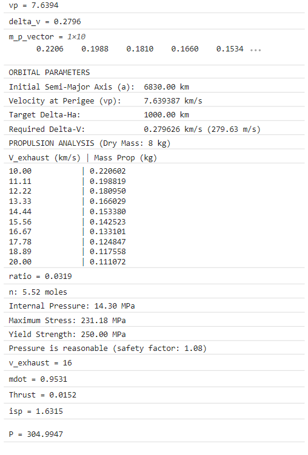
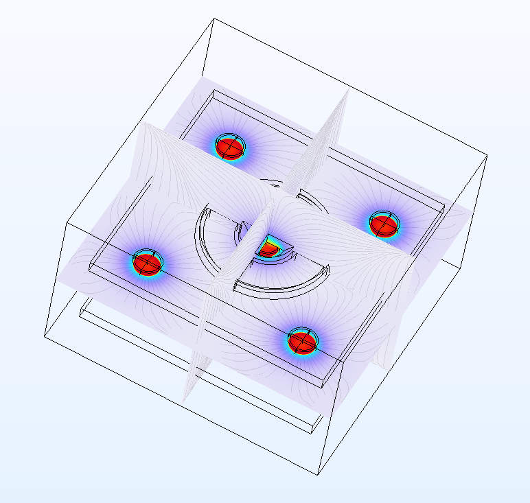

We built MATLAB models for the MK5 Hall effect thruster on an 8 kg CubeSat. For a 280 m/s apogee raise, the model gives 0.11-0.22 kg of propellant across exhaust velocities of 10-20 km/s. At 0.95 mg/s of argon it predicts about 15 mN of thrust, 1,630 s Isp and 305 W. We wrote the results up as an Olin ISR.

MK5 MATLAB output.
We rebuilt the MK4 Hall effect thruster in COMSOL to learn the software and simulate its electromagnetic fields, to support a redesign with updated design parameters.

MK4 field simulation in COMSOL.
We wrote design requirements for a 3U CubeSat-size thruster. As part of that we did a thin-wall stress check on an Al 6061-T6 propellant tank with a 3 mm wall at 14.3 MPa. The safety factor came out to 1.08.